Siding
Siding is a a web app used for walls that runs on our JBOSS server.
Installing and running Siding one any environment
- You must install Tcserver first to run this app
- Running & Debugging Webapps
- Special case: open Configure Java > put in exception list due to the new java 7 update security reasons. Allows you to run siding.
- For each environment dev, stage, prod, and for each app server, you will need to add an exception list for them
- ex: visit any stage link, you will see that the url is something like "http://kiosk-stage1-app-kvm:8080"
- Add that url, with or without the :8080 to your java exception list
- If ever roofing or siding isn't showing up, some basic checks are to make sure that url for that app is added, you are using IE, enterprise is turned on


Tcserver Checks
- Siding uses AOP load-time-weaving for logging SLA stuff
- We need to make sure the loader code below is in tcserver > designit > conf > catalina > localhost > SidingEstimator.xml
- <Loader loaderClass="org.springframework.instrument.classloading.tomcat.TomcatInstrumentableClassLoader"/>
Highlights
- Like Roofing, Siding uses "Struts" (a design pattern) to design how data connects within the app
- Sprites - buttons that look similar are grouped and put into one big image and then sliced into individual sprites at load time. This is to speed up loading times. It does this by loading just one image instead of multiple images.
- Change blocks and see it implemented automatically on screen
- Unlike C++ apps, to get the material list with SKU numbers you have to either print out the estimation or look in the JBoss server log. You won't be able to access the JBoss server, so as a team member that has access if you need more info
The Life Cyle of Siding's Database Changes
- You do your data changes on Dev using the LB link
- This is how we make changes to the database
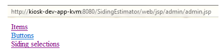 - Make sure that your local files in JBoss under C:\JBoss\jboss-eap-5.2\jboss-as\server\default\deploy
- sidingAdmin-ds.xml
- Siding-ds.xml
- SidingDesigns-ds.xml
- have their <connection-url> pointing to dev (_d)
- 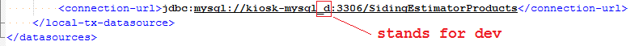
- Once your work is done and reviewed then we send a DMR to DBA to merge the changes from Dev to Stage.
- Once we do our Stage testing then we use the DMR with a PCR to merge the changes to Prod.
Finding out the Pattern Selection for a Siding1, Siding2, ...
Note that each Siding1, Siding2, ... stores its own sides and selection pattern. That's because each Siding(which can include multiple sides) can be different. If the use only selects one type of siding, you will only see Siding1. To know the selections for that Siding1, Siding2, ..., you want to start at NewCreateEstimate.java where the houseSide is being looped. Inside the loop, it goes into each side's selectionForm and that's where you'll find the selection for that side product. Look for product.doSideEstimate(SelectionForm). If you breakpoint there you'll see what siding it is and under its selection, you'll see the key value selection pattern.
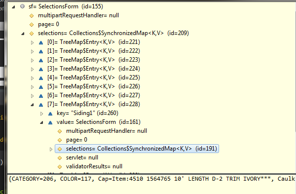Understanding Siding Selections
Unlike most of our other common applications, when a product button is selected on a screen, behind the scene, we would get and store this product sku and info for the final estimation. But this is not true in siding. What's so bizzare in Siding is that the final product selections are determined based on the final screen selection pattern.
For example, starting at the begining screen in siding, If you select and go from screen A,B,C and then jump to screen F,G and end with Z, your final selection comes to a combination of ABCFGZ. ABCFGZ is a stored screen flow pattern in the data base in additional to the other 10,000+ patterns! This pattern is then mapped to predetermined products which we have to manually set. Though the product qty will take care of itself, we have to provide what products this pattern will and can output. This is why siding takes forever to update products, because to update one product (which there are over 10,000 different pattern selections) like a water effect, we also have to make sure we take care of the other patterns that will be affected by the change.
The only Exception is Siding's additional options, which it uses a better method to select products using sidingSkuID.properties (similar to roofing). All other regular siding selections determine their products base on the screen flow pattern, which you will see it is one of the worst design implementation. When produt selections were small, this design was fine, but as the application grew, maintaining the application has become more complex than ever to maintain.
Here's how it works. Visit the siding admin link under the dev. Visit the link Siding Selections. This 10,000+ rows of database handles all the possible screen flows and what products each pattern gets.
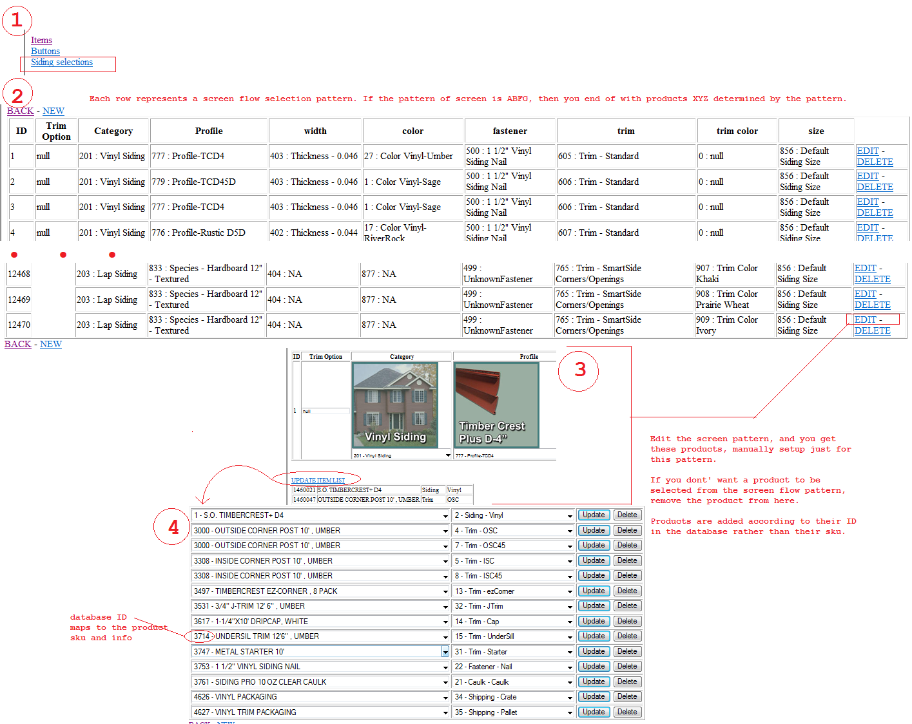
Checking estimated product SKU
Running the app at your PC, you can check the jboss or tcserver app_logs under SidingEST.log. The log will spit out the skus of estimated products. Running the app in the test lab, there is no log to look at, therefore printout the estimate, run it through systemV using the estimate ID to check for product skus.
Lab Testing
- Lab Testing Info
- For roofing, siding and gutter, you have to point the URL/environment to the stage environment when lab testing
- On 8888 test store, F6 > pass > MyComputer > C > Menards > Utils > MenardAppMenu > dsgnit.xml
- Right click on dsgnit.xml and open in notepad
- scroll to the bottom set of tags, one is for gutter, roofing, and siding, set all three to the following
- AppArg should = stage-kiosk...=restart&selection(storeNumber)=3011"...
- save
Round trip how values in itemAttributes.properties gets used [This is for siding's Additional Options only]
Siding has two ways of retrieving data. One is for regular products and another is for additional options products. Additional options uses the itemAttributes.properties. The main products use the mySQL database to pull product info from. The screen flow in siding is also controlled through the mySQl database base on screen patterns. (bad design but we have to go with it)
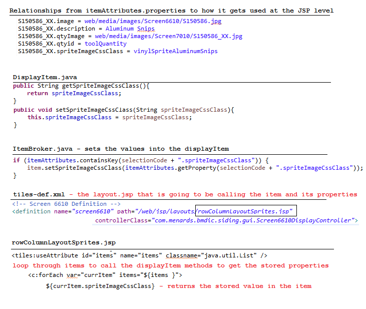Estimation
Estimation in siding is a little different from Roofing. There is no one class that does all the estimation (half true). Depending on the siding category, that category.java class will make the estimation. So to see what has been selected in the codes, you'll have to put a break point in the specific category class. For example, Lap.java if lap siding was chosen.
The start of the whole application starts with CreateNewEstimatate, here's a high level glance at the entire process.
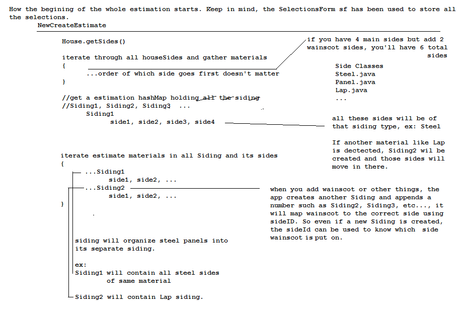
Alternative, maybe better approach is break point in NewCreateEstimate.getEstimation() by if (product != null).
Here you can also put a break point by selectionsForm varaible sf to see all the selections. This break point is reached per side. So if you have 4 sides, you'll loop this line 4 times.

To trace the selected screen pattern, same break point above, but hover over selectionsForm > sidingSelection treeMap or access selectionForm variable sf.getSelection("Siding1"). Keep in mind that, each Side is estimated separately. (there may or may not be a final check to optimize materials). Becuse each side can have openings or doors, etc, therefore each side is best to be estimated individually.
To trace the gathered selections for a specific side or a screen pattern, put break point under NewCreateEstimate.getEstimation() at return resultMap.
At this point, the products should have been estimated for all sides. Remember, one side has a screen pattern of category, profile, width, color, etc.
in which it determines what products are estimated for that one side.

To get all the possible products for that screen pattern selected, break point at any of the above, such as result map. Look into sf.getSelection("Siding1") and then under sidingSelection. These are the gathered materials that can be estimated from the pattern. It doesn't mean they all will get estimated. Each estimate category class, i.e. Steel.java, will determine from the list what gets estimated using EstimateUtils.addSizedItem and such.
The main estimation will be named as "Siding1". Any additional adds for example, if wainscot is added, all sides of that wainscot will be grouped as "Siding2". Any other additional addons will be named "Siding3" and so on.
What's also true is that every new material there are, are grouped into a new Siding.
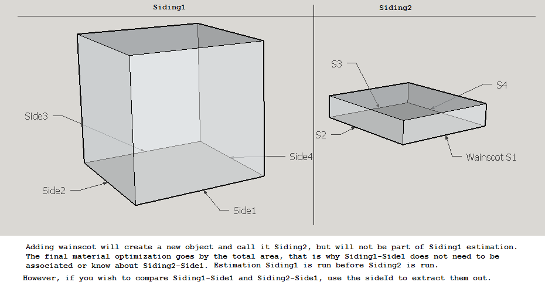
All sides that can estimate implement the EstimationProduct interface (i.e. Steel, Lap, Log, etc). NewCreateEstimation starts towards the last few screens in siding. NewCreateEstimate uses a factory pattern to get what EstimationProduct(Steel, Lap, etc) to return. Each side then gathers the possible materials it can estimate based on the selectionsForm (which has a screen pattern selection). The return EstimationProduct calls the getEstimation to calculate how much materials to estimate base on the possible materials the side has gather. The final materials results are stored in resultMap. Optional materials are then estimated additionally into resultMap, as it is a special sepearate estimation apart from the regular estimation.
Known Issues or Products not showing
You may not always get the qty you expect for steel qty, But this is correct for Steel, the below image looks wrong is correct. This is because steel is cut to fit the size it needs to and so the pricing is correct.
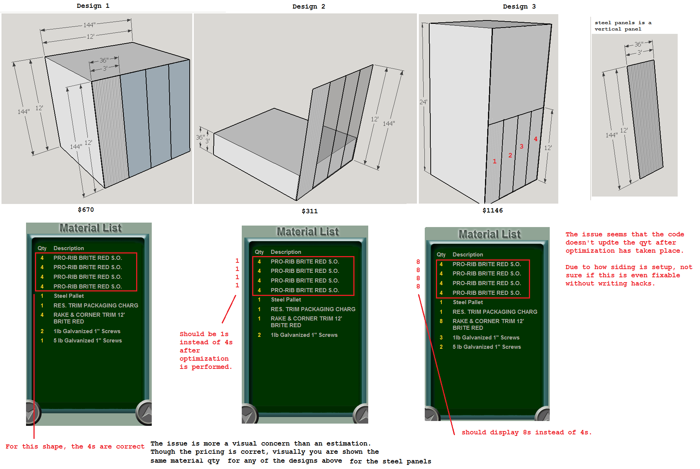No Products
Make sure you override the store #. So in the url at first page, 3011 should be changed to 4444 (regression) or 8888 or 6666 for regular mcr testing. However using either of these two, pricing will not be accurate as only 3011 has pricing setup. You can still use 3011 and should maybe use it, till 8888 and 6666 are stable with pricing. But if you run into missing products, run under 8888 or 6666.
Setup
- Eclipse
- Java
- JBoss or TCServer (depending on what we are currently using)
Debugging Browser Issues
For IE11 siding and roofing won't show up properly unless you change the emulation settings.
- Start remote or local siding on first page
- F12 > change to settings below
- Proceed with the app
Updating or request new sprites
- Look under siding workspace > media > sprites
- Find all buttons that are similar > duplicate and save it into a organized folder
- ex: WitchWalls folder would have all witchWall buttons in it
- Create MCR request for sprite and attach the zip folder and description describing what is what and what to do
- Attach the MCR# to the parent ticket if there is such a ticket
Bottom Trims vs Wainscot (Bottom Trim is only an option for steel panel siding)
Keep in mind, though bottom trim is the same material as the material above it, bottom trim is a different sku so it is a different product. That is why steel bottom trims come in longer pieces, such as 12 feet and not 3 feet like regular side steel panels. It is possible to have wainscot and a bottom trim on wainscot. This means the bottom trim will be the same material as the wainscot. Bottom Trim 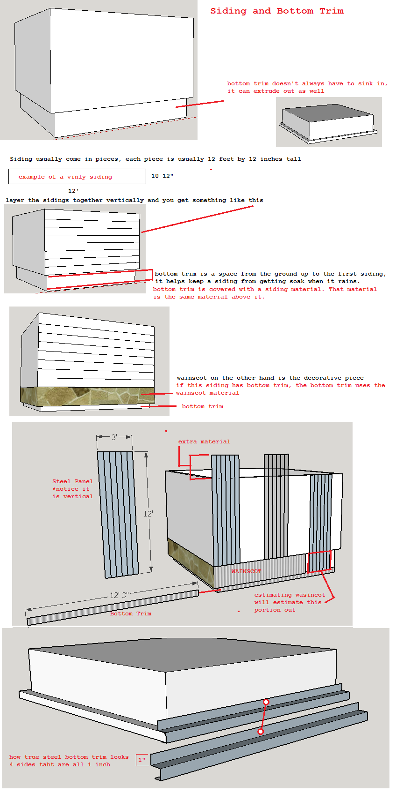
Sides
Also see known issues for the summary screen with sides above.
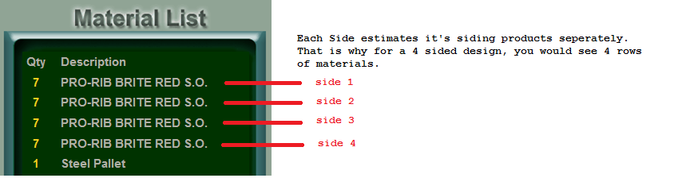
Adding new log file to siding
There many ways to setup log4j. Siding uses the properties approach. Say you want a new type of log file for logging crashes. Aside from the already implemented logs, you can easily add a SidingCrash.log this way
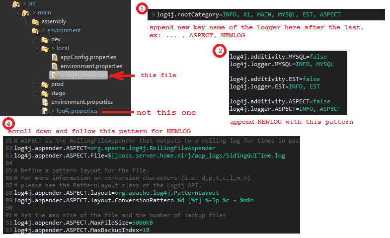AOP setup for web using spring struts
How to access the web context inside controller
If you are dealing with AOP or tring to instantiate a bean, you may want to access the web context, here's how
ServletContext sc = request.getSession().getServletContext();
WebApplicationContext context = WebApplicationContextUtils.getWebApplicationContext(sc);
BeanTest beantest = (BeanTest) context.getBean("testBean");
beantest.test();
Environment Properties
Siding and roofing have a similar setup for accessing environment properties. A appConfig.properties file is setup for each environment folder local,dev,stage,prod. This way at runtime, Siding will pull the correct appconfig properties depending on what environment you are in.
There is a catch. when running siding locally, the local/environment.properties controls which appConfig to grab. If you are not getting the right appConfig properties at runtime, the path to the appConfig.properties is probably set to a different path in the environment.properties. You can easily modify the environment to point to the correct path, either target the deploy folder or your local server sidingApp folder.
Use the StatsLogging class to call in the appConfig like this. There is quite a setup but if you use the class the setup is already setup. The only requirement is that you also have access to the request httpServlet as you have to pass that in.
Properties appConfigProperties = StatsLogging.getAppConfigurations(request);
appConfigProperties.getProperty("emailGroup")